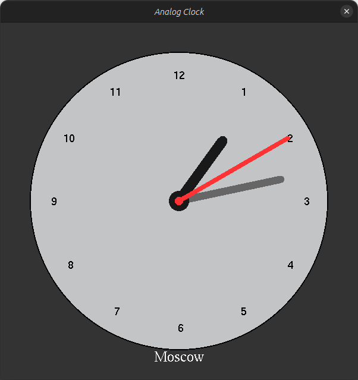

This is a simple analog clock project implemented in C++ using the SDL2 and OpenGL libraries. It displays an analog clock with customizable attributes, including its position, size, time zone offset, and label.
Table of Contents
Features
- Displays an analog clock with hours, minutes, and seconds hands.
- Allows customization of the clock's position, size, label, and time zone offset.
- Real-time clock updates based on the system time.
- Simple and clean C++ code.
Dependencies
This project relies on the following libraries:
- SDL2: Simple DirectMedia Layer is a cross-platform development library designed to provide low-level access to audio, keyboard, mouse, joystick, and graphics hardware via OpenGL.
- OpenGL: The OpenGL graphics rendering library.
- GLUT: The OpenGL Utility Toolkit, used for bitmap character rendering.
Make sure you have these libraries installed on your system before compiling and running the project.
Installation
To compile and run this project, follow these steps:
- Clone this repository to your local machine:
git clone <https://github.com/Spiraks/AnalogClock>
- Navigate to the project directory:
- Compile the project using a C++ compiler (e.g., g++):
g++ -o analog_clock main.cpp ClockWindow.cpp AnalogClock.cpp -lSDL2 -lGL -lglut
- Run the compiled executable:
Usage
Upon running the program, you will see an analog clock window displaying the current time. The clock has a label indicating the time zone (default is "Moscow").
- The clock hands represent the current time, with the hour hand in red, minute hand in gray, and second hand in white.
- The clock numbers are displayed around the dial, indicating hours 1 through 12.
- Here is the file structure
main.cpp for a test run of your project:
#include <SDL2/SDL.h>
#include <GL/gl.h>
#include <GL/glut.h>
#include "AnalogClock.h"
#include "ClockWindow.h"
int main(int argc, char *args[])
{
glutInit(&argc, args);
SDL_Init(SDL_INIT_VIDEO);
AnalogClock my_clock(0, 250, 150, 3,
"Moscow", clockWindow);
bool quit = false;
SDL_Event e;
while (!quit)
{
while (SDL_PollEvent(&e) != 0)
{
if (e.type == SDL_QUIT)
{
quit = true;
}
}
clockWindow.Clear();
my_clock.Draw();
clockWindow.SwapBuffers();
SDL_Delay(1000);
}
SDL_Quit();
return 0;
}
Definition: AnalogClock.h:10
Definition: ClockWindow.h:6